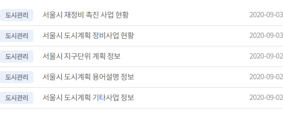
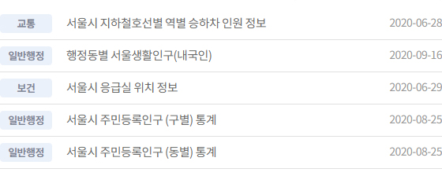
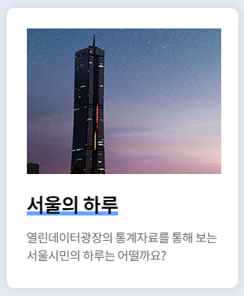
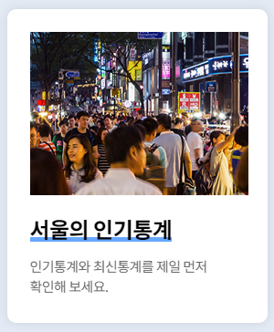
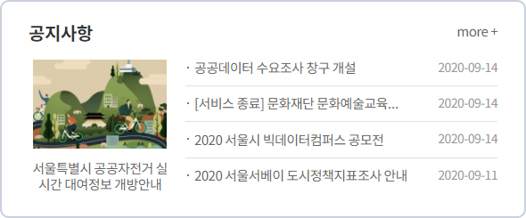
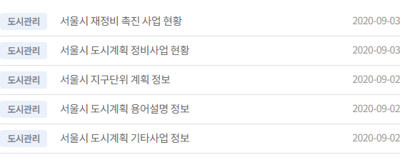
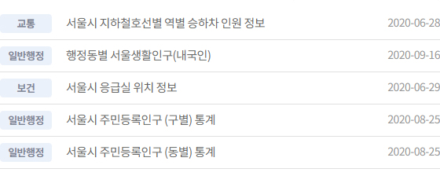
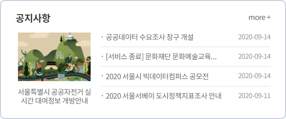

모든 서울시민들을 위한 공공데이터
열린데이터광장에서 서울시와 연계 기관이 공개한
공공데이터를 확인하실 수 있습니다.
서울시와 관련된 다양한 공공데이터를 확인해 보세요.
- 데이터셋
- 6,986
- 서비스
- 14,345
- Open API
- 5,465



- 
- 

열린데이터광장에서 서울시와 연계 기관이 공개한
공공데이터를 확인하실 수 있습니다.
서울시와 관련된 다양한 공공데이터를 확인해 보세요.



